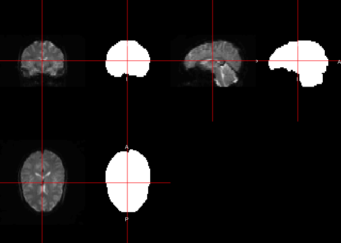
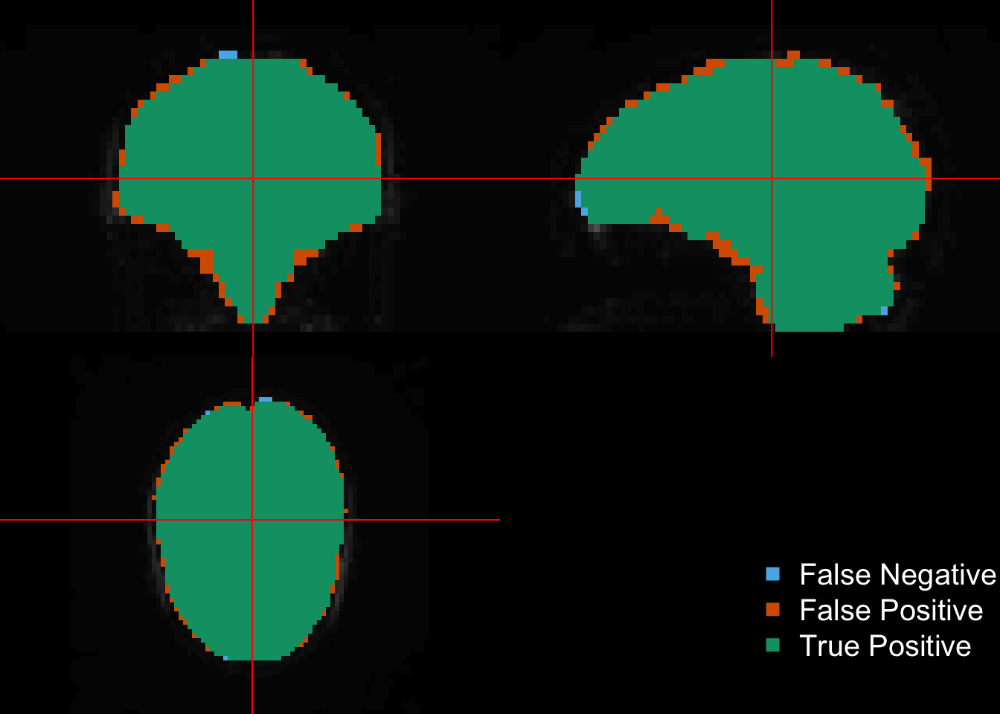
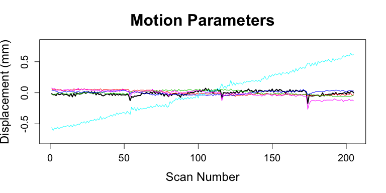
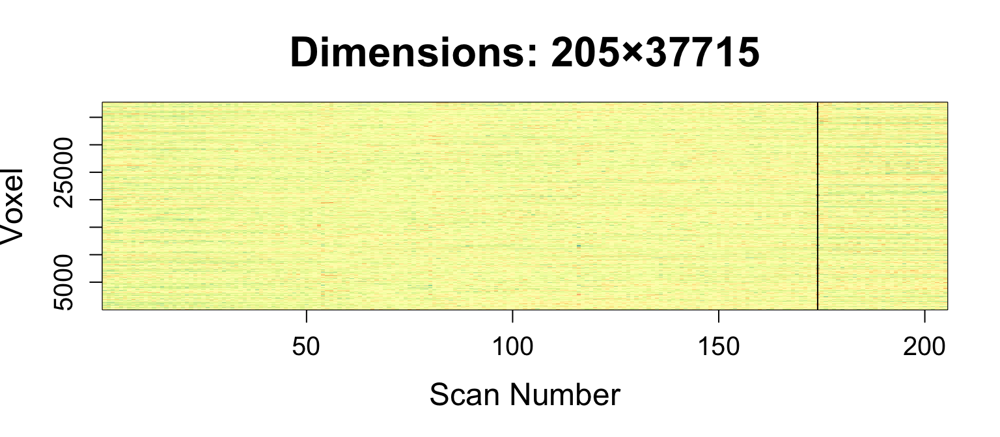

Slice Timing Correction
Similarly to the ANTsR processing, we can set opts = "-meanvol" so that the motion correction registers the images to the mean of the time series. The default otherwise is to register to the scan in the middle (closest to number of time points / 2). You can supercede this with either specifying -refvol for which time point to register to, or -reffile to specify a volume to register to. You can think of -meanvol as a wrapper for making the mean time series (using fslmaths(opt = "-Tmean")) and then passing that in as a reffile. We will do this explicitly in the code below. The -plots arguments outputs a .par file so that we can read the motion parameters after mcflirt is run.
moco_fname = paste0(base_fname,
"_motion_corr.nii.gz")
par_file = paste0(nii.stub(moco_fname), ".par")
avg_fname = paste0(base_fname,
"_avg.nii.gz")
if (!file.exists(avg_fname)) {
fsl_maths(file = sub_fmri,
outfile = avg_fname,
opts = "-Tmean")
}
if (!all(file.exists(c(moco_fname, par_file)))) {
moco_img = mcflirt(
file = sub_fmri,
outfile = moco_fname,
verbose = 2,
opts = paste0("-reffile ", avg_fname, " -plots")
)
} else {
moco_img = readnii(moco_fname)
}
moco_params = readLines(par_file)
moco_params = strsplit(moco_params, split = " ")
moco_params = sapply(moco_params, function(x) {
as.numeric(x[ !(x %in% "")])
})
moco_params = t(moco_params)
colnames(moco_params) = paste0("MOCOparam", 1:ncol(moco_params))
head(moco_params) MOCOparam1 MOCOparam2 MOCOparam3 MOCOparam4 MOCOparam5
[1,] -0.000309931 0.001248200 -4.26752e-04 0.03832110 -0.558039
[2,] -0.000650414 0.000826515 -5.37836e-04 0.03833610 -0.607328
[3,] -0.000581280 0.001141430 -4.26752e-04 0.03831010 -0.566965
[4,] -0.000906044 0.000826516 -4.26752e-04 0.02266840 -0.577867
[5,] -0.000188335 0.001106950 -1.23971e-04 0.01542600 -0.556718
[6,] -0.000605871 0.000849419 -6.14711e-06 0.00108561 -0.577868
MOCOparam6
[1,] 0.0768606
[2,] 0.0589568
[3,] 0.0704959
[4,] 0.0465875
[5,] 0.0412824
[6,] 0.0439374Let’s Make a Matrix!
img_ts_to_matrix creates \(V\times T\) matrix, \(V\) voxels in mask, unlike ANTsR::timeseries2matrix. Therefore, we transpose the matrix so that it is consistent with the ANTsR tutorial for fMRI and so boldMatrix is \(T\times V\). We will get the average of the co-registered image using fslmaths. We wil use this average image to get a mask using the oMask function, which calls getMask, but for nifti objects. We will then zero out the average image using the mask image.
moco_avg_img = fslmaths(moco_fname, opts = "-Tmean")fslmaths "/Users/johnmuschelli/Dropbox/Projects/neuroc/fmri_analysis_fslr/113-01-fMRI_motion_corr.nii.gz" -Tmean "/var/folders/1s/wrtqcpxn685_zk570bnx9_rr0000gr/T//RtmpsXJmUI/filea52947f11d2b";maskImage = oMask(moco_avg_img,
mean(moco_avg_img),
Inf, cleanup = 2)
mask_fname = paste0(base_fname, "_mask.nii.gz")
writenii(maskImage, filename = mask_fname)
bet_mask = fslbet(moco_avg_img) > 0bet2 "/private/var/folders/1s/wrtqcpxn685_zk570bnx9_rr0000gr/T/RtmpsXJmUI/filea5291952d00f.nii.gz" "/var/folders/1s/wrtqcpxn685_zk570bnx9_rr0000gr/T//RtmpsXJmUI/filea5292b13af31" bet_mask_fname = paste0(base_fname, "_bet_mask.nii.gz")
writenii(bet_mask, filename = bet_mask_fname)We can also look at the differences. We will assume the maskImage as the “gold standard” and bet_mask to be the “prediction”.
double_ortho(moco_avg_img, maskImage,
col.y = "white")
double_ortho(moco_avg_img, bet_mask,
col.y = "white")ortho_diff( moco_avg_img, roi = maskImage, pred = bet_mask )Warning in max(img, na.rm = TRUE): no non-missing arguments to max;
returning -InfWarning in min(img, na.rm = TRUE): no non-missing arguments to min;
returning InfWarning in max(img, na.rm = TRUE): no non-missing arguments to max;
returning -InfWarning in min(img, na.rm = TRUE): no non-missing arguments to min;
returning Inf
Here we will create a matrix of time by voxels.
moco_avg_img[maskImage == 0] = 0
boldMatrix = img_ts_to_matrix(
moco_img)
boldMatrix = t(boldMatrix)
boldMatrix = boldMatrix[ , maskImage == 1]Calculation of DVARS
With this boldMatrix, we can calculate a series of information. For example, we can calculate DVARS based on the motion corrected data. We can also compare the DVARS to the DVARS calculated from the non-realigned data.
Here we show how you can still use ANTsR::computeDVARS to calculate DVARS. The first element of dvars is the mean of the my_dvars. By the definition of @power2012spurious, the first element of DVARS should be zero.
Here we will multiply the 3 first motion parameters (roll, pitch, yaw) by 50 to convert radians to millimeters by assuming a brain radius of 50 mm, as similar to @power2012spurious. The next 3 parameters are in terms of millimeters (x, y, z). We will plot each of the parameters on the same scale to look at the motion for each scan.
dvars = ANTsR::computeDVARS(boldMatrix)
dMatrix = apply(boldMatrix, 2, diff)
dMatrix = rbind(rep(0, ncol(dMatrix)), dMatrix)
my_dvars = sqrt(rowMeans(dMatrix^2))
head(cbind(dvars = dvars, my_dvars = my_dvars)) dvars my_dvars
[1,] 18861.75 0.00
[2,] 18335.35 18335.35
[3,] 18855.69 18855.69
[4,] 17292.62 17292.62
[5,] 18590.46 18590.46
[6,] 18375.67 18375.67print(mean(my_dvars))[1] 18861.75Similarly, we can calculate the marginal framewise displacement (FD). The rotation parameters are again in radians so we can translate these to millimeters based on a 50 mm radius of the head.
mp = moco_params
mp[, 1:3] = mp[, 1:3] * 50
mp = apply(mp, 2, diff)
mp = rbind(rep(0, 6), mp)
mp = abs(mp)
fd = rowSums(mp)mp = moco_params
mp[, 1:3] = mp[, 1:3] * 50
r = range(mp)
plot(mp[,1], type = "l", xlab = "Scan Number", main = "Motion Parameters",
ylab = "Displacement (mm)",
ylim = r * 1.25,
lwd = 2,
cex.main = 2,
cex.lab = 1.5,
cex.axis = 1.25)
for (i in 2:ncol(mp)) {
lines(mp[, i], col = i)
}
rm(list = "mp")Heatmap of the values
We can look at the full trajectory of each voxel over each scan. We scaled the data (by column, which is voxel), which is somewhat equivalent to doing whole-brain z-score normalization of the fMRI.
We can find the index which has the highest mean value, which may indicate some motion artifact.
library(RColorBrewer)
library(matrixStats)
rf <- colorRampPalette(rev(brewer.pal(11,'Spectral')))
r <- rf(32)
mat = scale(boldMatrix)
image(x = 1:nrow(mat),
y = 1:ncol(mat),
mat, useRaster = TRUE,
col = r,
xlab = "Scan Number", ylab = "Voxel",
main = paste0("Dimensions: ",
dim(mat)[1], "×", dim(mat)[2]),
cex.main = 2,
cex.lab = 1.5,
cex.axis = 1.25)
rmeans = rowMeans(mat)
bad_ind = which.max(rmeans)
print(bad_ind)[1] 174abline(v = bad_ind)
sds = rowSds(mat)
print(which.max(sds))[1] 174rm(list = "mat")library(animation)
ani.options(autobrowse = FALSE)
gif_name = "bad_dimension.gif"
if (!file.exists(gif_name)) {
arr = as.array(moco_img)
pdim = pixdim(moco_img)
saveGIF({
for (i in seq(bad_ind - 1, bad_ind + 1)) {
ortho2(arr[,,,i], pdim = pdim, text = i)
}
}, movie.name = gif_name)
}
Much of the rest of the commands are again within R or already implemented in ANTSR. Analyses in FSL commonly use independent components analysis (ICA) with the melodic command. We will not cover that here and will cover it in a subsequent tutorial.